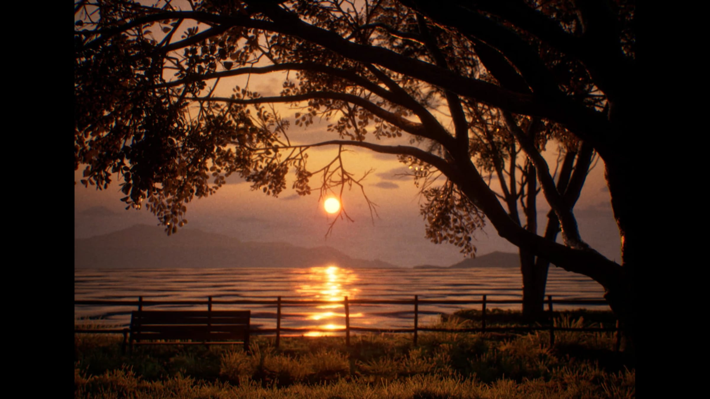

본문으로 이동
3Dowon
Menu
3Dowon
EN
3Dowon
About
Works
All
인터랙티브
설치
영상
전시
퍼포먼스
VR/AR
웹
Lab
Portfolio
CV
EN

The Focus of Sunset
날짜
2024
유형
영상
기술
Unreal
제작
개인
소개
호흡의 리듬이 공간 전체의 지도를 그리는 라이브 퍼포먼스입니다.
이런 작업도 좋아하실 거예요
50/50 VISION
영상
2024
Aura of Heart
영상
2024
Inside the Summer
영상
2024
Motion Blur
영상
2024
작업 보기 ↗
닫기 ×